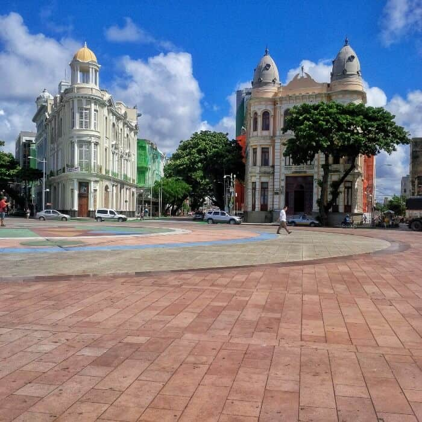
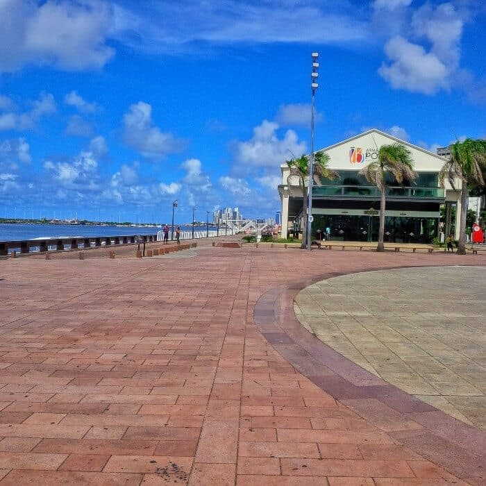

Marco Zero
O que fazer no Marco Zero, um dos pontos turísticos e históricos mais importantes da cidade do Recife.
A Praça Barão do Rio Branco, mais conhecida como Marco Zero, é um dos lugares mais simbólicos de Recife porque remete à fundação da cidade e aos tempos gloriosos da época colonial quando era um dos principais centros econômicos do país.
Conhecer o conjunto arquitetônico eclético
A praça e o bairro inteiro, já durante o domínio holandês (1630-1654), passaram por aterros e reformas radicais, com altos e baixos. Uma das mais importantes foi a reforma urbana do início de 1900, que deixou como legado um importante acervo arquitetônico eclético, tombado como patrimônio nacional pelo IPHAN em 1998, que assim justifica o reconhecimento:
Exemplar único, íntegro e híbrido da Paris de Haussmann no Brasil.
Os edifícios de inspiração eclética, construídos entre 1912 e 1915, que merecem destaque pelo valor histórico e arquitetônico são:
- Antiga sede do London & River Plate Bank: localizado entre as avenidas Alfredo Lisboa, Marquês de Olinda e Rio Branco, é um dos palacetes mais bonitos da cidade (o primeiro da esquerda para a direita). Passou muito tempo fechado mas hoje sedia a empresa informática In Loco que disponibiliza visitas guiadas (informações no local porque o site não está atualizado).
- Associação Comercial de Pernambuco: sede da associação; abriga importante acervo da memória do comércio pernambucano, como quadros, vitrais e uma coleção de livros e jornais (o segundo da esquerda para a direita). O edifício pode ser visitado mas consulte o site oficial para maiores informações.
- Prédio da Caixa Cultural: inicialmente projetado como sede do Bank of London & South America Limited, em 1967 foi adquirido pela Bolsa de Valores de Pernambuco (terceiro edifício na foto de abertura). Hoje sedia a Caixa Cultural e organiza exposições. Consulte o site oficial para conferir a programação.
Visitar o Parque das Esculturas de Francisco Brennand

Exatamente na frente do Marco Zero, do outro lado do estuário, fica o Parque das Esculturas, uma exposição de mais de 90 (?) obras do escultor e artista plástico pernambucano Francisco Brennand, inaugurado em 2000 para comemorar os 500 anos da chegada dos portugueses ao Brasil. A obra mais famosa é a Torre de Cristal, com 32 metros de altura. Infelizmente fica difícil informar sobre as outras obras porque há anos o parque é alvo de roubos (sim, roubos) e atos de vandalismo. Algumas das obras mais interessantes foram estragadas ou roubadas, como a imensa Serpente de bronze de quase 20 metros de comprimento. O parque é pouco fiscalizado e à noite é mal iluminado e pouco visível. Uma pena que o descaso do Poder Pública tenha mais uma vez subestimado o valor cultural e histórico dos monumentos da cidade. Para chegar lá você pode pegar o barquinho que sai do Marco Zero ou ir de carro, moto ou bicicleta passando pela Avenida Brasília Teimosa, seguindo até o dique. Aconselho a quem vai de carro de verificar as condições do trecho da avenida que fica no dique. No local tem um pequeno estacionamento.
Curtir a vista e o pôr-do-sol no espaço Armazéns do Porto
Do lado direito da praça encontra-se Armazéns do Porto, um espaço de entretenimento e gastronomia, com várias opções de bares e uma vista excelente onde recifenses e turistas jogam papo fora nos fins de tarde e à noite.